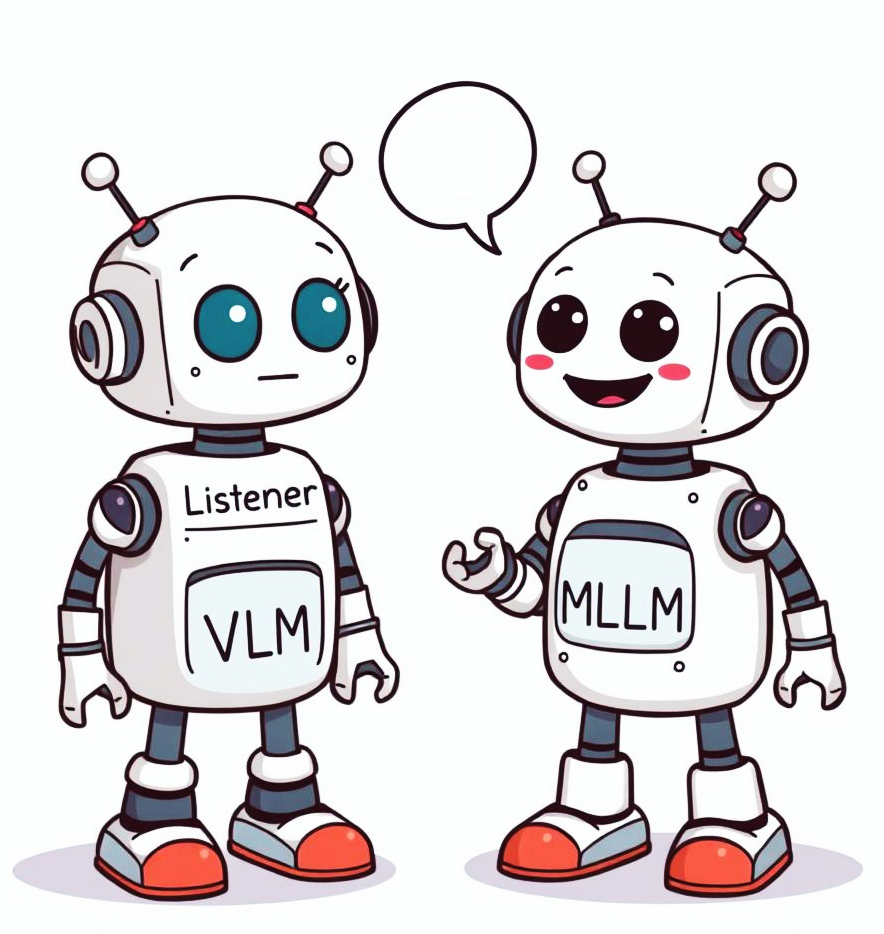

|
Manu Gaur Hey there. I am Manu. I’m a self-taught researcher. I have now spent two wonderful years working with Dr. Makarand Tapaswi at the Centre of Visual Information Technology, IIIT Hyderabad. Currently, I am working with Dr. Yuki Asano on a new paradigm for vision-language modelling. Before this, I was a student researcher at Amazon's International Machine Learning team, working on GNNs and self-supervised learning. In a previous life, I graduated from Delhi Technological University. Although I majored in Applied Physics, I became interested in ML during my junior year. Soon after, I was spending most of my time after university watching lectures, reading blogs, engaging in online forums and conducting my own research on free Colab GPUs. Shortly after graduation, I came to IIIT Hyderabad, to learn how to do research from first principles. Outside of ML , I enjoy physics, history, playing chess, football, and ocassional basketball. Also, I love to travel :) Email / CV / Twitter / Google Scholar / Github |
{kind=link}
ResearchBroadly, I work on self-supervised learning, vision language models, generative modelling and reinforcement learning. Infants develop visual understanding and common sense reasoning by simply observing and interacting with the world around them. While current systems show remarkable multimodal understanding, progressively squeezing more knowledge into them through supervised learning makes them brittle. To achieve generalized intelligence, I believe these systems need to independently learn from first principles, either by modeling the underlying structure of data or through trial and error. Hence, I am interested in self-supervised and reinforcement learning for improving visual understanding, multimodal reasoning, and knowledge acquisition in current systems. |
Publications |
|  |
Manu Gaur,
Darshan Singh,
Makarand Tapaswi
ECCV EVAL-FoMo Workshop, 2024
TL;DR: It is easier for MLLMs to select an answer from multiple choices during VQA than to generate it independently. We evaluate MLLMs visual capabilities through self-retrieval within highly similar image pairs, revealing that current models struggle to identify fine-grained visual differences, with open-source models failing to outperform random guess. |

|
Manu Gaur,
Darshan Singh,
Makarand Tapaswi
TMLR, 2024
TL;DR: Enhancing visual understanding in MLLMs with a self-supervised verifiable reward. A findings rich paper that systematically improves captioning systems across all fronts: Data, Training, Evaluation. We design: (1) a post-training recipe for self-retrieval finetuning with REINFORCE, and (2) a synthetic framework for visually boosting captioning datasets. Jointly they enable captioners to generate fine-grained, succinct descriptions while reducing hallucinations. Using our training recipe, ClipCap, a 200M param simplication of modern MLLMs, outperforms sota open-source MLLMs on fine-grained visual discrimination. |